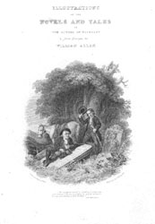

|
|
||||||||||
|
|
Home | Corson Collection | Biography | Works | Image Collection | Recent Publications | Correspondence | Forthcoming Events | Links | E-texts | Contact William Home Lizars (1788-1859)Born in Edinburgh in 1788, William Home Lizars was the son of Daniel Lizars, a well known copperplate engraver and printer. Lizars was first apprenticed to his father then, from 1802 to 1805, studied under John Graham at the Trustees' Academy in Edinburgh, an institution established in 1760 to teach drawing and design for use in manufacture. Lizars sought to establish himself as a painter, frequently exhibiting both portraits and genre paintings between 1805 and 1815. In 1812, he sent two pictures, 'Reading the Will' and 'A Scotch Wedding' to the Royal Academy in London, which met with great success. They were engraved by Charles Turner and may well have influenced the identically titled works by Sir David Wilkie (a contemporary of Lizars at the Trustees' Academy). In the same year, however, the death of Lizars's father forced him to abandon painting. In order to support his mother and family, he was compelled to take over the family printing and engraving business.
He contributed extensively to the growing number of publications catering for the Scottish tourist trade (that had received such an impetus from the success of Scott's novels), notably Picturesque Views of Edinburgh, The Scottish Tourist, and Robert Chambers's The Picture of Scotland. For the latter, he engraved Loch Katrine (made famous by The Lady of the Lake), Melrose Abbey (made famous by The Lay of the Last Minstrel), Fast Castle (often seen as the model for Wolf's Crag in The Bride of Lammermoor), and one of the earliest images of Scott's Abbotsford home. He published a further image of Abbotsford, after his own design, in 1832.
Lizars constantly experimented with new techniques and, in 1821, perfected a method of etching away the background of a copper plate to produce a relief surface similar to that in a wood engraving. In 1826, he was a founder member of the Royal Scottish Academy and in 1834 was elected an Honorary member. He died 30 March 1859 in Jedburgh. A prolific engraver and an energetic presence on the Edinburgh publishing scene, Lizars contributed to numerous editions of Scott's works. He produced title-page vignettes for Novels and Tales of the Author of Waverley and The Poetical Works of Sir Walter Scott (both 1821), an engraving of Crichton Castle for Provincial Antiquities and Picturesque Scenery of Scotland (1826), title-page vignettes and frontispieces for Tales and Romances of the Author of Waverley (1827-28), title-page vignettes and frontispieces for all four series of Tales of a Grandfather (1828-31), frontispieces to Letters on Demonology (1830) and to Scott's Miscellaneous Prose Works (1835-36), and an engraving of Scott's dedicatory letter to the King in vol. I of the Magnum Opus edition of the Waverley Novels. Among many derivative works, Lizars produced the title-page vignette for Illustrations of the Novels and Tales of the Author of Waverley from Designs by William Allan (1821; click image, right) and frontispieces for Dramas from the Novels and Tales of the Author of Waverley (1823).
For more engravings by Lizars, search the Image Database. Bibliography
Last updated: 4-Sept-2009 |
|||||||||